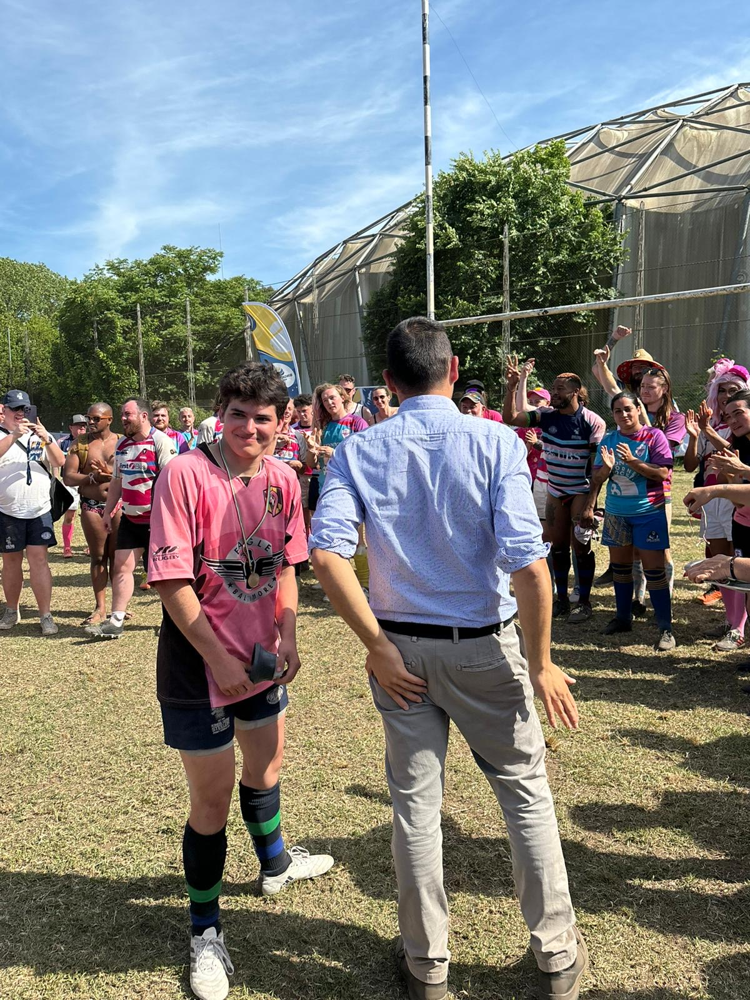
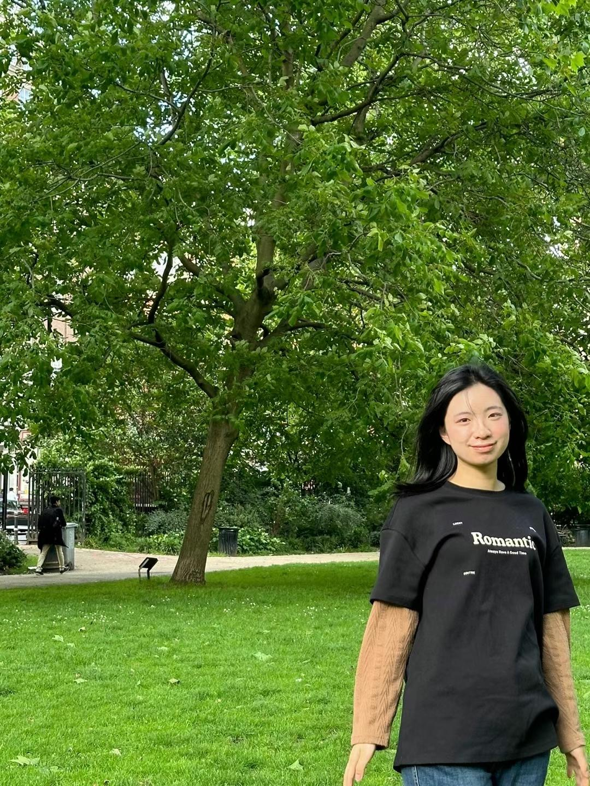

Ruby de Lanerolle
Data Analysis, Methodology and Findings
Academic Interest: Interested in how we make inferences from evidence, and how these inferences affect our social world.
QM Application: Gathering a tool-kit of quantitative methods to study the social world, while also studying the methods themselves.

Joe Larrodé
Visualization
Academic Interest: Looking to increase research and available data pertaining to the trans community, focusing on policies and practices in sports.
QM Application: Utilizing a wide range of data analysis tools while engaging with existing literature.
Alice (Yucheng) Pan
Website Content - Implications and Conclusion
Academic Interest: Using economic models to understand people's behaviors and decision-making in society.
QM Application: Developing skills to statistically analyze data and present findings through various visual methods.
Joy Adams
Literature Review, Background, Discussion and Limitations
Academic Interest: Studying how economic and social factors affect societal interactions, particularly in relation to the justice system.
QM Application: Developing technical and interpretative skills for understanding statistical research.

Alice (Yi Hsun) Wang
Implications and Discussion
Academic Interest: Economics with focus in Data Analytics
QM Application: Gaining practical experience in visualizing and analyzing complex datasets.
Wooz
Website Design, Development and Deployment
Academic Interest: Technical implementation and web development, focusing on creating accessible and well-structured digital platforms for research presentation.
QM Application: Applying technical skills to effectively present quantitative research findings through interactive web platforms and ensuring proper deployment of research materials.